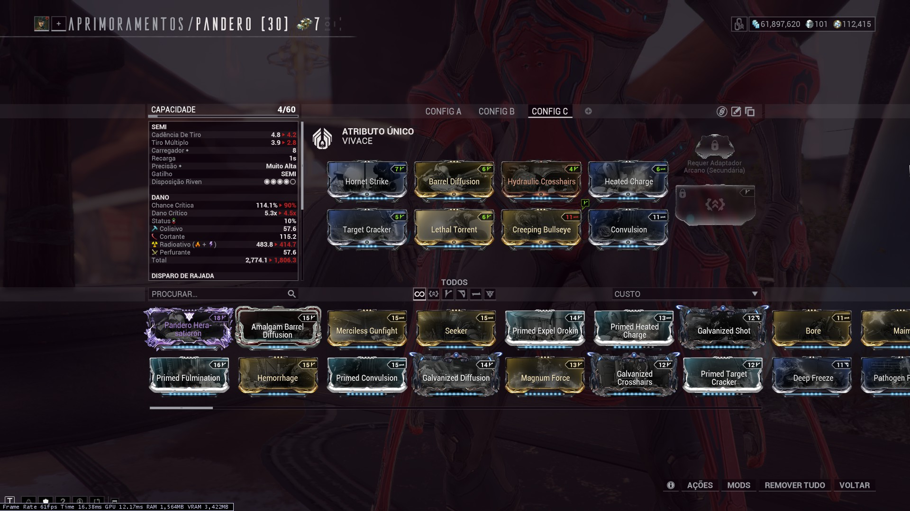

Modo Iniciante
Uma recomendação de setup simplificada para quem está começando a caçar Eidolons.
O loadout a seguir é uma sugestão com o objetivo de concluir a caça aos três Eidolons em uma noite. O foco é conforto e sobrevivência, com ênfase na manutenção das Iscas de Eidolons, sendo o dano algo secundário.
Warframe
A Trinity é minha recomendação para quem está começando e deseja ter uma experiência mais tranquila. Sua quarta habilidade "Benção" é capaz de curar aliados, o que inclue as Iscas de Eidolon, além de oferecer redução de dano recebido. Sua prioridade jogando com a Trinity é manter as Iscas de Eidolon vivas.

O arcano Anulação Arcana torna a caçada muito mais confortável, pois permite ignorar os pulsos magnéticos que os Eidolons emitem quando tem uma Sinóvia quebrada, tornando a economia de energia mais eficiente. Os mods Rage e Quick Thinking são complementares um ao outro, gerando energia ao tomar dano na vida e também drenando energia em situações de dano fatal. Flow e Vitality aumentam a energia e vida máxima, enquanto Precision Intensify permite alcançar a redução de dano máxima com a Benção.

Esta é a versão definitiva desta build. Mods como Adaptation e Hunter Adrenaline são complementares a economia de vida e energia já existentes na build inicial, enquanto o restante dos mods foca em eficiência para que a Benção possa ser conjurada com frequência para curar as Iscas.
Armas
As armas utilizadas variam de acordo com o gosto do jogador. Minha recomendação é utilizar uma arma de grande dano em um dos equipamentos, e outra arma com mais dano em área, para lidar mais facilmente com os Eidolons Vonvalistas.
Algumas armas para dano em Eidolons:


Algumas armas com foco em controle de Vonvalistas:

Opcionalmente, qualquer Lâmina-Arma pode ser utilizada como arma branca com Shattering Impact para remoção da armadura dos Eidolons, porém não é algo necessário.

Operador, Foco e Amps
Em casos onde o jogador não possue nenhuma amp além da Sirocco, eu recomendo altamente utilizar alguns ciclos noturnos farmando apenas o Eidolon Teralista e Eidolon Vonvalistas a fim de subir de rank e pegar reputação com Os Plumas para conseguir construir uma Amp melhor e comprar arcanos para Amps e Operador. Alternativamente, caso o jogador já tenha arcanos de Zariman, estes também são opções para melhorar o dano da Amp inicialmente.
Arcanos interessantes para a Amp: Erradicação Perpétua (Zariman), Massacre Perpétuo (Zariman), Ataque Virtuoso (Os Plumas) e Sombra Virtuosa (Os Plumas).
Para a escola de foco, a que traz maior dano para o operador é a Madurai. Entretanto, caso ainda não tenha liberado as habilidades, qualquer escola de foco é útil, ficando a gosto.
Arcanos para operador não são muito relevantes para o dano, então também ficam a gosto.
Esta configuração oferece grande sobrevivência ao operador através dos arcanos e o maior dano possível para a Amp utilizando a escola de foco Madurai.

Exemplo de caçada
O vídeo a seguir é um exemplo de caçada utilizando a configuração recomendada neste guia.